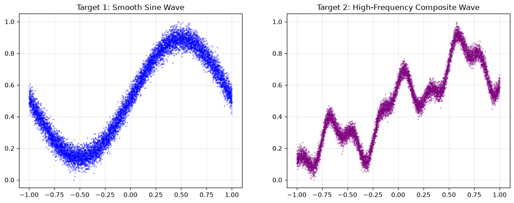
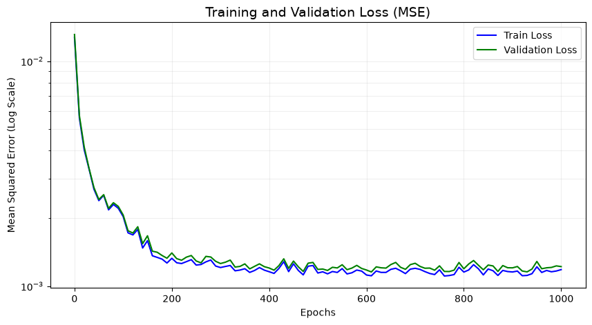
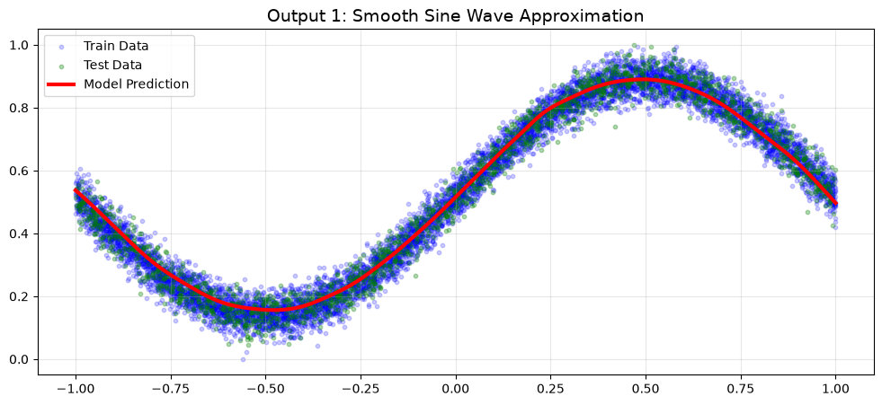
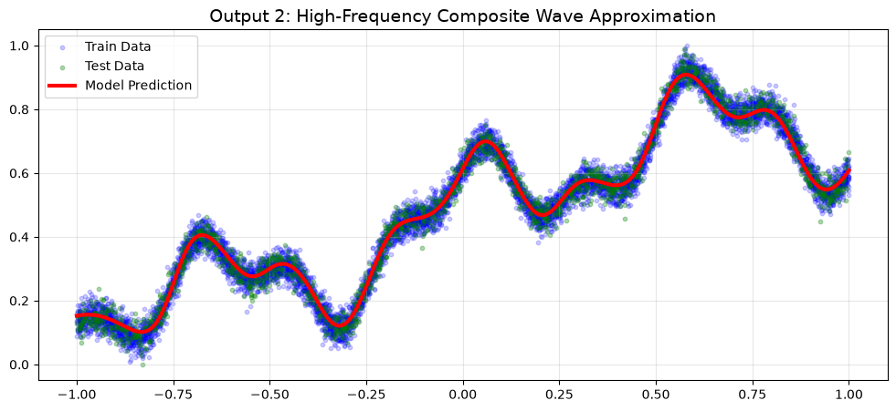
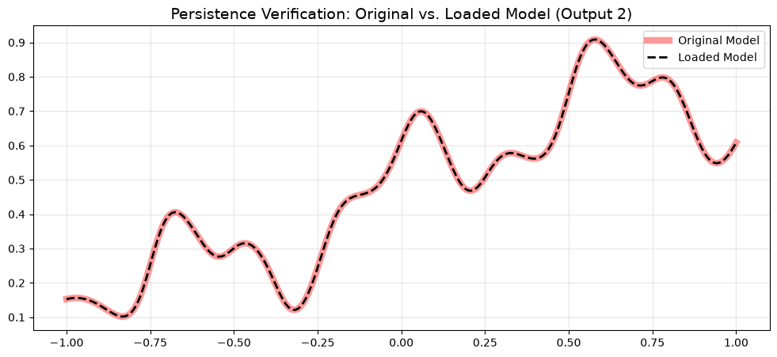

import ml_framework as ml
import matplotlib.pyplot as plt
import numpy as np
# General Configuration
N_SAMPLES = 10000
N_IN_FEATURES = 1
N_OUT_FEATURES = 2
X_MIN = -1.0
X_MAX = 1.0
rng = np.random.default_rng(seed=42)Multi-Output Non-Linear Regression
This notebook demonstrates how to use the ml-engine-from-scratch framework to solve a complex, multi-output regression task.
Unlike classification tasks where the output is a discrete label, regression requires the network to predict continuous values. We will task our Multi-Layer Perceptron (MLP) with simultaneously learning two distinct continuous functions from a single input \(x\): 1. A smooth, low-frequency sine wave. 2. A highly complex, multi-frequency wave.
This serves as a practical demonstration of the Universal Approximation Theorem, showing how deep networks can map 1D inputs to multi-dimensional continuous spaces.
1. Data Generation and Initial Visualization
We will generate 10,000 random scalar inputs \(x \in [-1, 1]\). From these inputs, we generate two targets with added Gaussian noise: * \(y_1 = \sin(\pi x) + \epsilon\) * \(y_2 = \sin(2x) + 0.5\cos(10x) + 0.25\sin(25x) + \epsilon\)
Neural networks typically perform best when target variables are scaled. We will normalize both \(y_1\) and \(y_2\) to the \([0, 1]\) range before splitting the dataset.
# Generate inputs
x_data = X_MIN + (X_MAX - X_MIN) * rng.random((N_SAMPLES, N_IN_FEATURES))
# Generate targets with noise
noise = rng.standard_normal((N_SAMPLES, 1)) * 0.1
y1 = np.sin(np.pi * x_data[:, 0:1]) + noise
y2 = np.sin(2 * x_data[:, 0:1]) + 0.5 * np.cos(10 * x_data[:, 0:1]) + 0.25 * np.sin(25 * x_data[:, 0:1]) + noise
y_data = np.hstack((y1, y2))
# Normalize Targets to [0, 1] using Min-Max scaling
y_data[:, 0] = (y_data[:, 0] - np.min(y_data[:, 0])) / (np.max(y_data[:, 0]) - np.min(y_data[:, 0]))
y_data[:, 1] = (y_data[:, 1] - np.min(y_data[:, 1])) / (np.max(y_data[:, 1]) - np.min(y_data[:, 1]))
# Initial Visualization of the Raw Data
plt.figure(figsize=(14, 5))
plt.subplot(1, 2, 1)
plt.title('Target 1: Smooth Sine Wave', fontsize=12)
plt.scatter(x_data, y_data[:, 0], color='blue', s=2, alpha=0.3)
plt.grid(alpha=0.3)
plt.subplot(1, 2, 2)
plt.title('Target 2: High-Frequency Composite Wave', fontsize=12)
plt.scatter(x_data, y_data[:, 1], color='purple', s=2, alpha=0.3)
plt.grid(alpha=0.3)
plt.show()
# Train/Test Splitting (80/20)
split_idx = int(N_SAMPLES * 0.8)
X_train, X_test = x_data[:split_idx], x_data[split_idx:]
y_train, y_test = y_data[:split_idx], y_data[split_idx:]
print(f"Train shapes: X={X_train.shape}, y={y_train.shape}")
print(f"Test shapes: X={X_test.shape}, y={y_test.shape}")
Train shapes: X=(8000, 1), y=(8000, 2)
Test shapes: X=(2000, 1), y=(2000, 2)2. Neural Network Architecture
Regression of highly non-linear, high-frequency functions requires sufficient depth and width.
Engineering Note: We are using the Hyperbolic Tangent (Tanh) activation function here instead of ReLU. Tanh provides smooth, differentiable, and bounded non-linearities \([-1, 1]\), which often yield much smoother curve approximations for continuous mathematical functions compared to the sharp “corners” created by ReLU networks.
# Model Architecture
model = ml.Sequential([
ml.LinearLayer(in_features=1, out_features=32, rng=rng),
ml.ActivationLayer(func=ml.Tanh, derivative=ml.TanhDerivative),
ml.LinearLayer(in_features=32, out_features=32, rng=rng),
ml.ActivationLayer(func=ml.Tanh, derivative=ml.TanhDerivative),
ml.LinearLayer(in_features=32, out_features=64, rng=rng),
ml.ActivationLayer(func=ml.Tanh, derivative=ml.TanhDerivative),
ml.LinearLayer(in_features=64, out_features=2, rng=rng)
])
print("Model Architecture Initialized:")
print(model)
# For regression, Mean Squared Error (MSE) is the standard loss metric
loss_fn = ml.MSELoss()
optimizer = ml.Adam(learning_rate=0.001)Model Architecture Initialized:
Sequential(
(0): LinearLayer(in_features=1, out_features=32, bias=True)
(1): ActivationLayer(func=Tanh)
(2): LinearLayer(in_features=32, out_features=32, bias=True)
(3): ActivationLayer(func=Tanh)
(4): LinearLayer(in_features=32, out_features=64, bias=True)
(5): ActivationLayer(func=Tanh)
(6): LinearLayer(in_features=64, out_features=2, bias=True)
)3. Model Training
We train the model for 1000 epochs. Because we are optimizing a continuous output, we track the Mean Squared Error (MSE). We shuffle the data at the start of every epoch to ensure stochasticity in our mini-batches.
EPOCHS =1000
TEST_FREQ = 10
BATCH_SIZE = 128
loss_values = []
val_loss_values = []
for epoch in range(EPOCHS):
model.train()
# Shuffle training data
indices = np.arange(X_train.shape[0])
rng.shuffle(indices)
X_train_shuffled = X_train[indices]
y_train_shuffled = y_train[indices]
# Mini-batch training
for start_idx in range(0, X_train.shape[0], BATCH_SIZE):
end_idx = start_idx + BATCH_SIZE
X_batch = X_train_shuffled[start_idx:end_idx]
y_batch = y_train_shuffled[start_idx:end_idx]
# Forward pass
y_pred = model(X_batch)
# Compute loss (caches y_pred and y_expected internally)
loss_fn(y_predicted=y_pred, y_expected=y_batch)
# Get the initial gradient from the MSE loss function
initial_gradient = loss_fn.backward()
# Backpropagation
model.backward(initial_gradient)
# Update weights
optimizer.step(model)
# Evaluation
if (epoch + 1) % TEST_FREQ == 0 or epoch == 0:
model.eval()
train_pred = model(X_train)
train_loss = loss_fn(y_predicted=train_pred, y_expected=y_train)
loss_values.append(train_loss)
test_pred = model(X_test)
test_loss = loss_fn(y_predicted=test_pred, y_expected=y_test)
val_loss_values.append(test_loss)
print(f"Epoch {epoch + 1:4d}/{EPOCHS} | Train MSE: {train_loss:.6f} | Val MSE: {test_loss:.6f}")Epoch 1/1000 | Train MSE: 0.012770 | Val MSE: 0.013132
Epoch 10/1000 | Train MSE: 0.005595 | Val MSE: 0.005732
Epoch 20/1000 | Train MSE: 0.004032 | Val MSE: 0.004147
Epoch 30/1000 | Train MSE: 0.003308 | Val MSE: 0.003330
Epoch 40/1000 | Train MSE: 0.002694 | Val MSE: 0.002740
Epoch 50/1000 | Train MSE: 0.002399 | Val MSE: 0.002428
Epoch 60/1000 | Train MSE: 0.002532 | Val MSE: 0.002549
Epoch 70/1000 | Train MSE: 0.002183 | Val MSE: 0.002216
Epoch 80/1000 | Train MSE: 0.002306 | Val MSE: 0.002348
Epoch 90/1000 | Train MSE: 0.002217 | Val MSE: 0.002260
Epoch 100/1000 | Train MSE: 0.002038 | Val MSE: 0.002071
Epoch 110/1000 | Train MSE: 0.001725 | Val MSE: 0.001763
Epoch 120/1000 | Train MSE: 0.001689 | Val MSE: 0.001721
Epoch 130/1000 | Train MSE: 0.001787 | Val MSE: 0.001836
Epoch 140/1000 | Train MSE: 0.001477 | Val MSE: 0.001545
Epoch 150/1000 | Train MSE: 0.001592 | Val MSE: 0.001674
Epoch 160/1000 | Train MSE: 0.001364 | Val MSE: 0.001430
Epoch 170/1000 | Train MSE: 0.001342 | Val MSE: 0.001414
Epoch 180/1000 | Train MSE: 0.001318 | Val MSE: 0.001368
Epoch 190/1000 | Train MSE: 0.001267 | Val MSE: 0.001330
Epoch 200/1000 | Train MSE: 0.001329 | Val MSE: 0.001404
Epoch 210/1000 | Train MSE: 0.001270 | Val MSE: 0.001325
Epoch 220/1000 | Train MSE: 0.001260 | Val MSE: 0.001303
Epoch 230/1000 | Train MSE: 0.001285 | Val MSE: 0.001345
Epoch 240/1000 | Train MSE: 0.001311 | Val MSE: 0.001368
Epoch 250/1000 | Train MSE: 0.001240 | Val MSE: 0.001293
Epoch 260/1000 | Train MSE: 0.001248 | Val MSE: 0.001269
Epoch 270/1000 | Train MSE: 0.001282 | Val MSE: 0.001356
Epoch 280/1000 | Train MSE: 0.001306 | Val MSE: 0.001347
Epoch 290/1000 | Train MSE: 0.001228 | Val MSE: 0.001289
Epoch 300/1000 | Train MSE: 0.001210 | Val MSE: 0.001260
Epoch 310/1000 | Train MSE: 0.001223 | Val MSE: 0.001277
Epoch 320/1000 | Train MSE: 0.001235 | Val MSE: 0.001305
Epoch 330/1000 | Train MSE: 0.001170 | Val MSE: 0.001215
Epoch 340/1000 | Train MSE: 0.001179 | Val MSE: 0.001224
Epoch 350/1000 | Train MSE: 0.001195 | Val MSE: 0.001255
Epoch 360/1000 | Train MSE: 0.001151 | Val MSE: 0.001193
Epoch 370/1000 | Train MSE: 0.001174 | Val MSE: 0.001224
Epoch 380/1000 | Train MSE: 0.001209 | Val MSE: 0.001256
Epoch 390/1000 | Train MSE: 0.001178 | Val MSE: 0.001220
Epoch 400/1000 | Train MSE: 0.001159 | Val MSE: 0.001203
Epoch 410/1000 | Train MSE: 0.001139 | Val MSE: 0.001177
Epoch 420/1000 | Train MSE: 0.001198 | Val MSE: 0.001233
Epoch 430/1000 | Train MSE: 0.001284 | Val MSE: 0.001322
Epoch 440/1000 | Train MSE: 0.001160 | Val MSE: 0.001199
Epoch 450/1000 | Train MSE: 0.001256 | Val MSE: 0.001292
Epoch 460/1000 | Train MSE: 0.001174 | Val MSE: 0.001218
Epoch 470/1000 | Train MSE: 0.001122 | Val MSE: 0.001162
Epoch 480/1000 | Train MSE: 0.001226 | Val MSE: 0.001264
Epoch 490/1000 | Train MSE: 0.001235 | Val MSE: 0.001274
Epoch 500/1000 | Train MSE: 0.001143 | Val MSE: 0.001186
Epoch 510/1000 | Train MSE: 0.001158 | Val MSE: 0.001191
Epoch 520/1000 | Train MSE: 0.001134 | Val MSE: 0.001174
Epoch 530/1000 | Train MSE: 0.001161 | Val MSE: 0.001213
Epoch 540/1000 | Train MSE: 0.001150 | Val MSE: 0.001204
Epoch 550/1000 | Train MSE: 0.001196 | Val MSE: 0.001244
Epoch 560/1000 | Train MSE: 0.001133 | Val MSE: 0.001183
Epoch 570/1000 | Train MSE: 0.001146 | Val MSE: 0.001203
Epoch 580/1000 | Train MSE: 0.001179 | Val MSE: 0.001236
Epoch 590/1000 | Train MSE: 0.001166 | Val MSE: 0.001198
Epoch 600/1000 | Train MSE: 0.001120 | Val MSE: 0.001179
Epoch 610/1000 | Train MSE: 0.001111 | Val MSE: 0.001156
Epoch 620/1000 | Train MSE: 0.001167 | Val MSE: 0.001218
Epoch 630/1000 | Train MSE: 0.001151 | Val MSE: 0.001206
Epoch 640/1000 | Train MSE: 0.001151 | Val MSE: 0.001202
Epoch 650/1000 | Train MSE: 0.001187 | Val MSE: 0.001247
Epoch 660/1000 | Train MSE: 0.001200 | Val MSE: 0.001274
Epoch 670/1000 | Train MSE: 0.001170 | Val MSE: 0.001212
Epoch 680/1000 | Train MSE: 0.001137 | Val MSE: 0.001188
Epoch 690/1000 | Train MSE: 0.001189 | Val MSE: 0.001246
Epoch 700/1000 | Train MSE: 0.001200 | Val MSE: 0.001263
Epoch 710/1000 | Train MSE: 0.001186 | Val MSE: 0.001223
Epoch 720/1000 | Train MSE: 0.001160 | Val MSE: 0.001201
Epoch 730/1000 | Train MSE: 0.001138 | Val MSE: 0.001203
Epoch 740/1000 | Train MSE: 0.001126 | Val MSE: 0.001177
Epoch 750/1000 | Train MSE: 0.001182 | Val MSE: 0.001230
Epoch 760/1000 | Train MSE: 0.001109 | Val MSE: 0.001162
Epoch 770/1000 | Train MSE: 0.001114 | Val MSE: 0.001161
Epoch 780/1000 | Train MSE: 0.001125 | Val MSE: 0.001178
Epoch 790/1000 | Train MSE: 0.001213 | Val MSE: 0.001273
Epoch 800/1000 | Train MSE: 0.001154 | Val MSE: 0.001194
Epoch 810/1000 | Train MSE: 0.001180 | Val MSE: 0.001254
Epoch 820/1000 | Train MSE: 0.001245 | Val MSE: 0.001299
Epoch 830/1000 | Train MSE: 0.001194 | Val MSE: 0.001238
Epoch 840/1000 | Train MSE: 0.001122 | Val MSE: 0.001182
Epoch 850/1000 | Train MSE: 0.001191 | Val MSE: 0.001240
Epoch 860/1000 | Train MSE: 0.001170 | Val MSE: 0.001229
Epoch 870/1000 | Train MSE: 0.001115 | Val MSE: 0.001162
Epoch 880/1000 | Train MSE: 0.001174 | Val MSE: 0.001234
Epoch 890/1000 | Train MSE: 0.001161 | Val MSE: 0.001207
Epoch 900/1000 | Train MSE: 0.001156 | Val MSE: 0.001206
Epoch 910/1000 | Train MSE: 0.001167 | Val MSE: 0.001222
Epoch 920/1000 | Train MSE: 0.001112 | Val MSE: 0.001167
Epoch 930/1000 | Train MSE: 0.001116 | Val MSE: 0.001157
Epoch 940/1000 | Train MSE: 0.001135 | Val MSE: 0.001191
Epoch 950/1000 | Train MSE: 0.001219 | Val MSE: 0.001287
Epoch 960/1000 | Train MSE: 0.001150 | Val MSE: 0.001195
Epoch 970/1000 | Train MSE: 0.001174 | Val MSE: 0.001206
Epoch 980/1000 | Train MSE: 0.001158 | Val MSE: 0.001211
Epoch 990/1000 | Train MSE: 0.001167 | Val MSE: 0.001230
Epoch 1000/1000 | Train MSE: 0.001184 | Val MSE: 0.0012214. Learning Curves Analysis
Because MSE can drop rapidly in the first few epochs and then decrease exponentially slowly, it is often best visualized on a logarithmic scale (semilogy). This allows us to observe the fine-tuning behavior in the later epochs.
plt.figure(figsize=(10, 5))
plt.title('Training and Validation Loss (MSE)', fontsize=14)
plt.semilogy(TEST_FREQ*np.arange(len(loss_values)), loss_values, 'b-', linewidth=1.5, label='Train Loss')
plt.semilogy(TEST_FREQ*np.arange(len(loss_values)), val_loss_values, 'g-', linewidth=1.5, label='Validation Loss')
plt.xlabel('Epochs')
plt.ylabel('Mean Squared Error (Log Scale)')
plt.legend()
plt.grid(True, which="both", ls="-", alpha=0.2)
plt.show()
5. Regression Curve Visualization
To evaluate our model visually, we will generate a perfectly spaced array of points across our input domain and ask the model to predict the outputs. We can then overlay this predicted curve on top of our noisy training and testing data.
# Generate continuous inputs for a smooth evaluation curve
model.eval()
X_eval = np.linspace(X_MIN, X_MAX, 500).reshape(-1, 1)
y_pred_eval = model(X_eval)
# Plot Output 1
plt.figure(figsize=(12, 5))
plt.title('Output 1: Smooth Sine Wave Approximation', fontsize=14)
plt.scatter(X_train[:, 0], y_train[:, 0], color='blue', s=10, label='Train Data', alpha=0.2)
plt.scatter(X_test[:, 0], y_test[:, 0], color='green', s=10, label='Test Data', alpha=0.3)
plt.plot(X_eval[:, 0], y_pred_eval[:, 0], 'r-', linewidth=3, label='Model Prediction')
plt.legend()
plt.grid(True, alpha=0.3)
plt.show()
# Plot Output 2
plt.figure(figsize=(12, 5))
plt.title('Output 2: High-Frequency Composite Wave Approximation', fontsize=14)
plt.scatter(X_train[:, 0], y_train[:, 1], color='blue', s=10, label='Train Data', alpha=0.2)
plt.scatter(X_test[:, 0], y_test[:, 1], color='green', s=10, label='Test Data', alpha=0.3)
plt.plot(X_eval[:, 0], y_pred_eval[:, 1], 'r-', linewidth=3, label='Model Prediction')
plt.legend()
plt.grid(True, alpha=0.3)
plt.show()

6. Model Persistence: Saving and Loading
Training a complex model takes time and compute resources. A professional framework must be able to serialize (save) the learned weights to disk and deserialize (load) them later for inference without retraining.
We will save our trained model, instantiate a completely fresh, untrained architecture, and load the saved weights. Finally, we will plot the predictions of both models to verify they match perfectly.
Save the Trained Model
# Save the trained model
save_path = "regression_model.pth"
model.save(filepath=save_path)
print(f"Model successfully saved to {save_path}")Model saved successfully to regression_model.pth
Model successfully saved to regression_model.pthLoad the Trained Model
# Instantiate a fresh, untrained model with the same architecture
loaded_model = ml.Sequential([
ml.LinearLayer(in_features=1, out_features=32, rng=rng),
ml.ActivationLayer(func=ml.Tanh, derivative=ml.TanhDerivative),
ml.LinearLayer(in_features=32, out_features=32, rng=rng),
ml.ActivationLayer(func=ml.Tanh, derivative=ml.TanhDerivative),
ml.LinearLayer(in_features=32, out_features=64, rng=rng),
ml.ActivationLayer(func=ml.Tanh, derivative=ml.TanhDerivative),
ml.LinearLayer(in_features=64, out_features=2, rng=rng)
])
# Load the trained weights into the fresh model
loaded_model.load(filepath=save_path)
print("Model weights successfully loaded!")
# Generate predictions using the loaded model
loaded_model.eval()
y_pred_loaded = loaded_model(X_eval)
# Visual verification
plt.figure(figsize=(12, 5))
plt.title('Persistence Verification: Original vs. Loaded Model (Output 2)', fontsize=14)
# Plot the original prediction as a thick, semi-transparent line
plt.plot(X_eval[:, 0], y_pred_eval[:, 1], color='red', linewidth=6, alpha=0.4, label="Original Model")
# Plot the loaded prediction as a thin dashed line over it
plt.plot(X_eval[:, 0], y_pred_loaded[:, 1], color='black', linestyle='--', linewidth=2, label="Loaded Model")
plt.legend()
plt.grid(True, alpha=0.3)
plt.show()Model loaded successfully from regression_model.pth
Model weights successfully loaded!
7. Conclusion and Spectral Bias
The ml-engine-from-scratch framework successfully learned to approximate a multi-dimensional function mapping.
Architectural Insight (Spectral Bias): You may notice that the model approximates the smooth, low-frequency sine wave (Output 1) almost perfectly and very early in training. However, the high-frequency composite wave (Output 2) takes significantly more epochs to capture, and the peaks may be slightly smoothed out.
This demonstrates a known phenomenon in Deep Learning called Spectral Bias: Neural networks naturally learn low-frequency functions easily and struggle to learn high-frequency variations. Solving this for complex physical simulations often requires techniques like Fourier Features or Positional Encodings (similar to those used in Transformers).